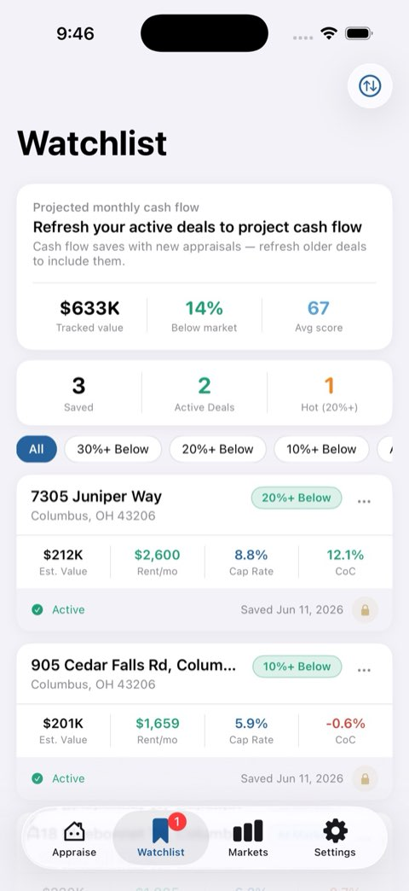
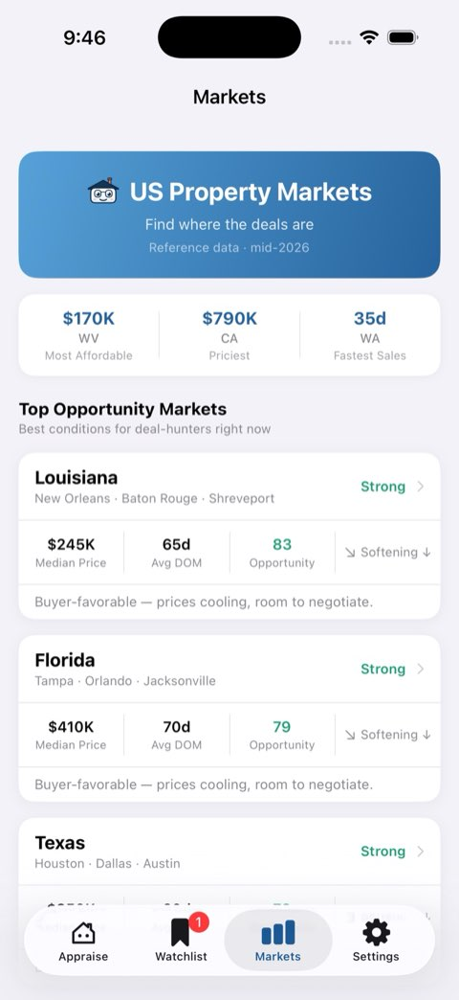

Native apps
Swift and SwiftUI applications designed for the platform, not browser views wrapped in an icon.
Fintlock builds focused native applications that turn scattered information into clear, useful judgment. Our flagship product, Fintley, helps investors analyze real estate opportunities from a single address.



Fintley turns property data into one clear investor report: valuation, rent estimates, deal math, market context, and a Forecast score.
Fintlock is intentionally small. The same team owns product thinking, interface design, engineering, privacy, and the details that make software feel finished.
Swift and SwiftUI applications designed for the platform, not browser views wrapped in an icon.
Products that simplify complex data into clear actions without hiding the reasoning underneath.
No ads, no data resale, and no unnecessary collection. The product should serve the user first.
We prefer working software over vague promises. Every product gets tested on real devices, revised until the flow is obvious, and shipped only when the details hold up.